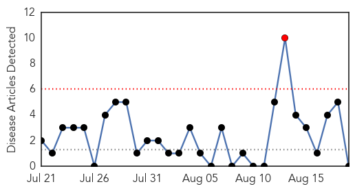
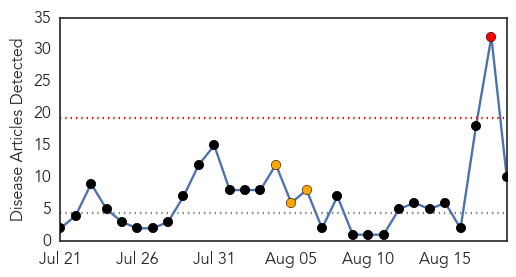
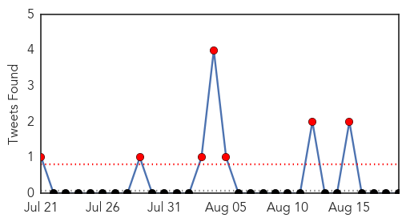
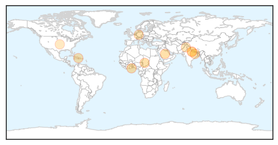
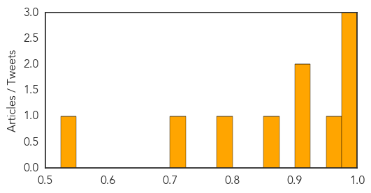

Pertussis
30-Day Web Trend
1 alerts, 0 warnings

30-Day Twitter Trend
0 alerts, 0 warnings

Article Locations

Article Confidences

Top Articles:
-
No articles found for Aug 19, 2014
Top Tweets:
-
No tweets found for Aug 19, 2014
Cholera
30-Day Web Trend
1 alerts, 3 warnings

30-Day Twitter Trend
7 alerts, 0 warnings

Article Locations
Article Confidences
Top Articles:
- 0.994
- 5000 Cholera cases recorded in G. Accra; 45 Dead since July
- 0.984
- Saudi gives WHO $50m for humanitarian aid in Iraq
- 0.979
- Recurrent Cholera Outbreak in Far North Cameroon Highlights Development Gaps
- 0.951
- Many dead in Nepal and India floods
- 0.915
- Haiti Humanitarian Needs Overview: Mid-Year Review (July 2014) - Haiti
- 0.902
- Nepal, India floods leave nearly 200 dead, scores missing[1]- Chinadaily.com.cn
- 0.869
- Lordina Foundation takes medical supply outreach to North Volta
- 0.786
- Health department providing medical cover to participants
- 0.723
- Nepal Floods Death Toll Passes 100
- 0.543
- Nepal Flood Toll Hits 101, Fears of Disease Rise
Top Tweets:
-
No tweets found for Aug 19, 2014